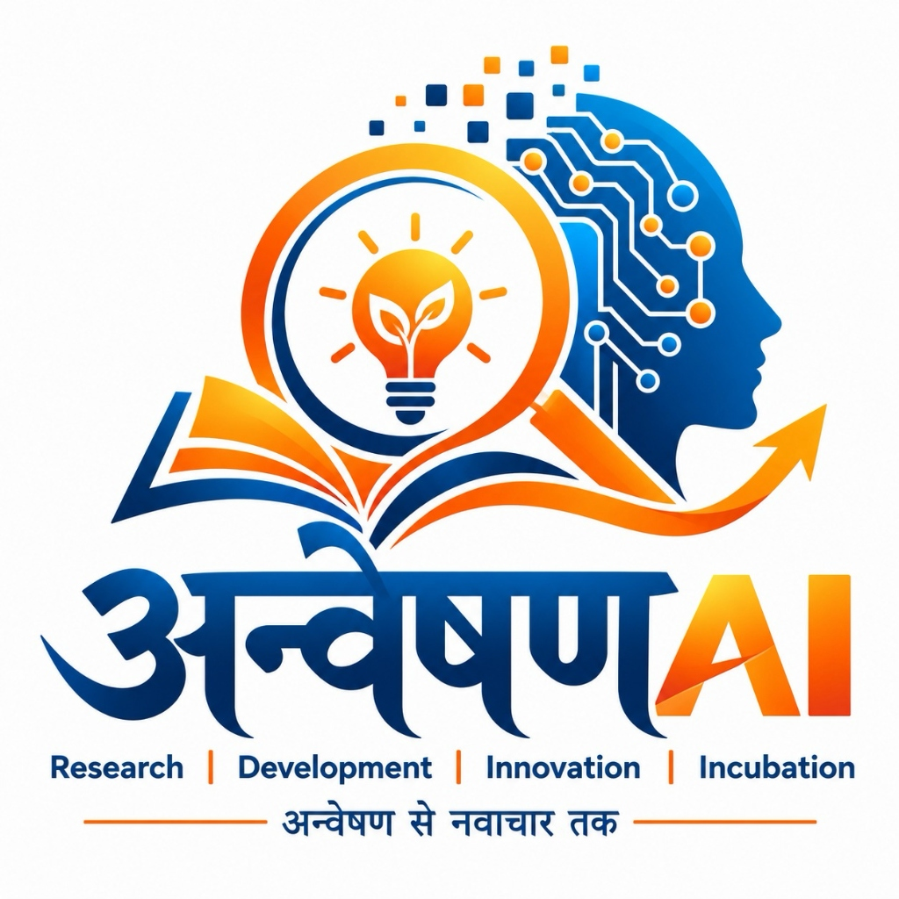

Assistant Professor (Senior Grade)
Department of Computer Science & Engineering
Jaypee University of Engineering and Technology (JUET), Guna, MP, India
Advancing Open-World Machine Learning, NLP & Computer Science Education
Dr. Jitendra Parmar is an Assistant Professor (Senior Grade) in the Department of Computer Science and Engineering at Jaypee University of Engineering and Technology (JUET), Guna, MP. With extensive research experience across machine learning, artificial intelligence, and software engineering, his primary research focuses on Unseen Class Identification in Open-World Machine Learning, text classification under domain drift, and continual learning.
He earned his Ph.D. in Computer Science and Engineering from the prestigious Malaviya National Institute of Technology (MNIT) Jaipur. His breakthrough work has been published in world-leading top-tier venues including ACM Computing Surveys (Impact Factor: 30.4, ranked 1/147 in CS Theory), Information Processing & Management (Impact Factor: 8.1), and the Journal of Systems and Software (Impact Factor: 4.1).
In recognition of his academic rigor, Dr. Parmar received the prestigious Research Scholarship from the Ministry of Education, Government of India in 2019. Prior to joining JUET Guna, he served as Assistant Professor at SCAI, VIT Bhopal University (2023–2025) and in the Department of Information Technology at SGSITS Indore (2015–2019).
Dedicated portals for Dr. Parmar's scientific research projects and JUET Virtual Lab educational platforms

Advancing Intelligence • Empowering Discovery • Inspiring Innovation
Dedicated AI/ML research laboratory spanning Deep Learning, Generative AI, LLMs, Computer Vision, and Open-World Intelligence benchmarks.
Educational laboratory platform supporting Computer Science curriculum. Features dedicated views for Ongoing Projects (ACID Simulator, AI Error Explainer) and Completed Projects (SQL Practice Lab with 75 queries across 5 modules and parallel verification).
High-impact research in SCI-Q1 journals and premier international conferences
J. Parmar, S. S. Chouhan, V. Raychoudhury, and S. S. Rathore
ACM Computing Surveys (CSUR), vol. 55, no. 10, Feb. 2023, ISSN: 0360-0300.
J. Parmar, S. S. Chouhan, and V. Raychoudhury
Information Processing & Management (IP&M), vol. 60, no. 2, p. 103214, 2023, ISSN: 0306-4573.
P. S. Thakur, S. S. Chouhan, S. S. Rathore, and J. Parmar
Journal of Systems and Software (JSS), p. 112784, 2026.
J. Parmar
2025 IEEE International Conference on Recent Advances in Computing and Systems (REACS), IEEE, 2025, pp. 1–6.
Dr. Parmar is seeking enthusiastic undergraduate, postgraduate, and Ph.D. scholars passionate about Machine Learning, Open-World Classifiers, NLP, and intelligent virtual lab development. Interested students at JUET Guna are encouraged to connect.
Academic discussions, research guidance, and student queries
Department of Computer Science & Engineering
Jaypee University of Engineering and Technology (JUET)
A.B. Road, Raghogarh, Guna, Madhya Pradesh - 473226, India